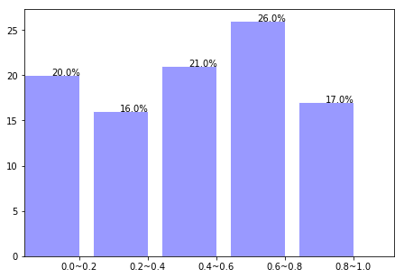
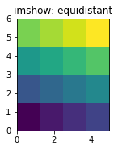

1. 用numpy做简单的统计
numpy有方便的数组,因此统计分析也是其很重要的一个功能
1.1. 基本统计运算
| 统计运算 | 说明 |
|---|---|
| sum | 统计求和 |
| mean | 均值 |
| average | 加权求均值 |
| median | 中值 |
| std | 标准差 |
| var | 方差 |
| min | 最小值 |
| argmin | 最小值下标 |
| max | 最大值 |
| argmax | 最大值下标 |
| ptp | 最大值和最小值之差 |
| sort | 排序 |
| argsort | 排序下标 |
| unique | 找出所有整数(不会出现重复),并排序,</br>可选参数return_index=True,会额外返回一个记录下标的数组</br>可选return_inverse=True,会额外返回一个下标数组,数组长度为原始数组,表示原始数组中对应的下标 |
| bincount | 对整数数组个元素出现次数统计,可选参数weight,可以对各个元素加权 |
其中很多运算还有个nanxxx版本,用来求相应函数去掉nan值得结果
import numpy as np
import matplotlib.pyplot as plt
import random
%matplotlib inline
1.2. 统计频数bincount
a = np.random.randint(0,5,10)
a
array([3, 3, 4, 1, 0, 1, 2, 4, 4, 2])
np.bincount(a)
array([1, 2, 2, 2, 3], dtype=int64)
len(filter(lambda x : x == 0,a))
---------------------------------------------------------------------------
TypeError Traceback (most recent call last)
<ipython-input-6-fb1e20a08aa3> in <module>()
----> 1 len(filter(lambda x : x == 0,a))
TypeError: object of type 'filter' has no len()
np.bincount(a,np.random.rand(10))
array([ 0.19711768, 1.18850072, 1.80437954, 0.94394277, 1.34664336])
1.3. 卷积
卷积运算符经常出现在信号处理中，其中它模拟线性时不变系统对信号的影响。在概率理论中，两个独立随机变量的和根据它们各自的分布的卷积来分布。 离散卷积运算定义为:
可以看出，在适当的填充（需要填充以防止循环卷积）之后，时间/空间中的卷积等价于傅立叶域中的乘法。由于乘法比卷积更有效（更快），函数scipy.signal.fftconvolve可以利用FFT来计算大数据集的卷积
numpy提供了通用的卷积操作convolve(a, v, mode='full')
其中前两个参数都是一维的输入向量,而mode则提供了可选的三种运算规则,它可以有3种选项
full 默认情况下，模式为“full”。这在每个重叠点处返回卷积，其输出形状为(N M-1,).在卷积的端点，信号不完全重叠，并且可以看到边界效应。
same 模式same返回长度max（M，N）的输出。边界效应仍然可见。
valid 模式'valid'返回长度为max(M,N)-min(M,N)+1.卷积产物仅针对信号完全重叠的点给出。信号边界外的值没有效果。
np.convolve([1, 2, 3], [0, 1, 0.5])
array([ 0. , 1. , 2.5, 4. , 1.5])
np.convolve([1,2,3],[0,1,0.5], 'same')
array([ 1. , 2.5, 4. ])
np.convolve([1,2,3],[0,1,0.5], 'valid')
array([ 2.5])
1.4. 相关性
numpy提供了3种算相关性的操作
其中rowvar=1表示向量是横置的,即每一列为向量的一个属性,每行是一个向量.为0则说明向量为竖置
np.corrcoef([[1,1,0,1,1],[0,1,0,1,1]])
array([[ 1. , 0.61237244],
[ 0.61237244, 1. ]])
np.corrcoef([[1,1,0,1,1],[0,1,0,1,1]],rowvar=0)
C:\Users\Administrator\Anaconda3\lib\site-packages\numpy\lib\function_base.py:2569: RuntimeWarning: invalid value encountered in true_divide
c /= stddev[:, None]
C:\Users\Administrator\Anaconda3\lib\site-packages\numpy\lib\function_base.py:2570: RuntimeWarning: invalid value encountered in true_divide
c /= stddev[None, :]
array([[ 1., nan, nan, nan, nan],
[ nan, nan, nan, nan, nan],
[ nan, nan, nan, nan, nan],
[ nan, nan, nan, nan, nan],
[ nan, nan, nan, nan, nan]])
$ c_{av}[k] = sum_n a[n+k] * conj(v[n]) $
其中a和v序列在必要时被填零，conj是共轭。mode 可选{‘valid’, ‘same’, ‘full’}
np.correlate([1, 2, 3], [0, 1, 0.5])
array([ 3.5])
np.correlate([1, 2, 3], [0, 1, 0.5], "same")
array([ 2. , 3.5, 3. ])
np.correlate([1, 2, 3], [0, 1, 0.5], "full")
array([ 0.5, 2. , 3.5, 3. , 0. ])
1.4.3. cov(m, y=None, rowvar=True, bias=False, ddof=None, fweights=None, aweights=None)估计协方差矩阵，给定数据和权重。
协方差表示两个变量一起变化的水平。 如果我们检查N维样本，则协方差矩阵元素$C{ij}$是$x_i$和$x_j$的协方差。$C{ii}$元素是$x_i$的方差。 其中rowvar一样是代表向量的是横置还是竖置
在概率论和统计学中，协方差Cov(X，Y)用于衡量两个变量的总体误差。而方差是协方差的一种特殊情况，即当两个变量是相同的情况。
期望值分别为$E(X)=\mu$与$E(Y)=\nu$的两个实数随机变量X 与Y 之间的协方差定义为：
$\operatorname{cov}(X, Y) = \operatorname{E}((X - \mu) (Y - \nu))$
$\operatorname{cov}(X, Y) = \operatorname{E}(X \cdot Y) - \mu \nu$
协方差矩阵是一个矩阵，其每个元素是各个向量元素之间的协方差。是从标量随机变量到高维度随机向量的自然推广。
persontype=np.dtype({'names':['name','height','weight'],'formats':['S32','f','f']},align=True)#先创建一个人物类型
a = np.array([("Huang",175,70),("Hao",170,60),("Li",180,75)],dtype=persontype)
data = np.array([a["height"],a["weight"]])
data
array([[ 175., 170., 180.],
[ 70., 60., 75.]], dtype=float32)
data_cov = np.cov(data)
data_cov #协方差矩阵
array([[ 25. , 37.5 ],
[ 37.5 , 58.33333333]])
#相关系数矩阵
data_corr = np.corrcoef(data)
data_corr
array([[ 1. , 0.98198051],
[ 0.98198051, 1. ]])
也就是说身高与体重相关系数高达98.19%
1.5. 直方图
最基础的直方图,计算一组数据各个区间中的数据统计
用法:
histogram(a,bins=10,range=None,normed=False,weights=None)
其中
bin指定统计区间个数,
range是一个长为2的元组,分别表示统计范围的最小值和最大值(None表示由数据决定)
normed=False表示返回在每个区间的个数,为True则表示返回一个在各个区间的概率密度
weight表示权值和前面一样用法
c = np.random.rand(100)
y,x = np.histogram(c,bins=5,range=(0,1))
x
array([ 0. , 0.2, 0.4, 0.6, 0.8, 1. ])
float(y[0])/sum(y)
0.20000000000000001
xticks = [str(x[i])+'~'+str(x[i+1]) for i in range(len(y)) ]
xticks
['0.0~0.2', '0.2~0.4', '0.4~0.6', '0.6~0.8', '0.8~1.0']
plt.axes([0.025,0.025,0.95,0.95])
plt.bar(range(len(y)), y, facecolor='#9999ff', edgecolor='white')
for i,j in zip(range(len(y)), y):
plt.text(i,j,str(float(y[i])/sum(y)*100)+"%")
plt.xlim(-0.4,5)
plt.xticks(np.arange(5)+0.4,xticks)
plt.show()

xedges = [0, 1, 1.5, 3, 5]
yedges = [0, 2, 3, 4, 6]
x = np.random.normal(3, 1, 100)
y = np.random.normal(1, 1, 100)
H, xedges, yedges = np.histogram2d(y, x, bins=(xedges, yedges))
H = np.ones((4, 4)).cumsum().reshape(4, 4)
print(H[::-1])
[[ 13. 14. 15. 16.]
[ 9. 10. 11. 12.]
[ 5. 6. 7. 8.]
[ 1. 2. 3. 4.]]
fig = plt.figure(figsize=(7, 3))
ax = fig.add_subplot(131)
ax.set_title('imshow: equidistant')
im = plt.imshow(H, interpolation='nearest', origin='low',
extent=[xedges[0], xedges[-1], yedges[0], yedges[-1]])

r = np.random.randn(100,3)
H, edges = np.histogramdd(r, bins = (5, 8, 4))
H.shape, edges[0].size, edges[1].size, edges[2].size
((5, 8, 4), 6, 9, 5)
x = np.array([0.2, 6.4, 3.0, 1.6])
bins = np.array([0.0, 1.0, 2.5, 4.0, 10.0])
inds = np.digitize(x, bins)
inds
array([1, 4, 3, 2], dtype=int64)
for n in range(x.size):
print(bins[inds[n]-1], "<=", x[n], "<", bins[inds[n]])
0.0 <= 0.2 < 1.0
4.0 <= 6.4 < 10.0
2.5 <= 3.0 < 4.0
1.0 <= 1.6 < 2.5
x = np.array([1.2, 10.0, 12.4, 15.5, 20.])
bins = np.array([0, 5, 10, 15, 20])
np.digitize(x,bins,right=True)
array([1, 2, 3, 4, 4], dtype=int64)
np.digitize(x,bins,right=False)
array([1, 3, 3, 4, 5], dtype=int64)